pagination-i64-narrow-dark-text1.0-offscreen-dpr1.0.png
failed: 3176 changed pixels; maximum channel error 211
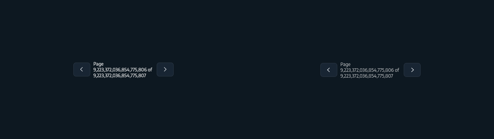
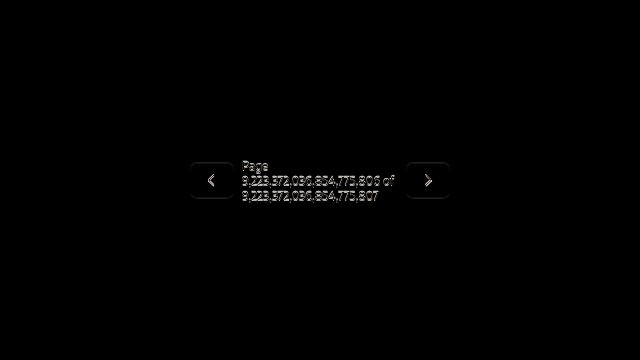
No resizing, ignored regions, or visual exceptions. Raw differences remain open.
failed: 3176 changed pixels; maximum channel error 211


failed: 9999 changed pixels; maximum channel error 216
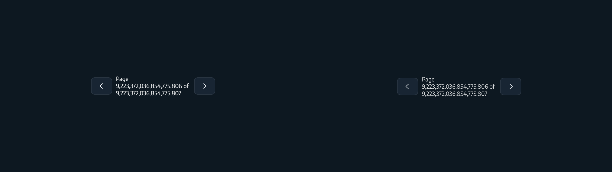
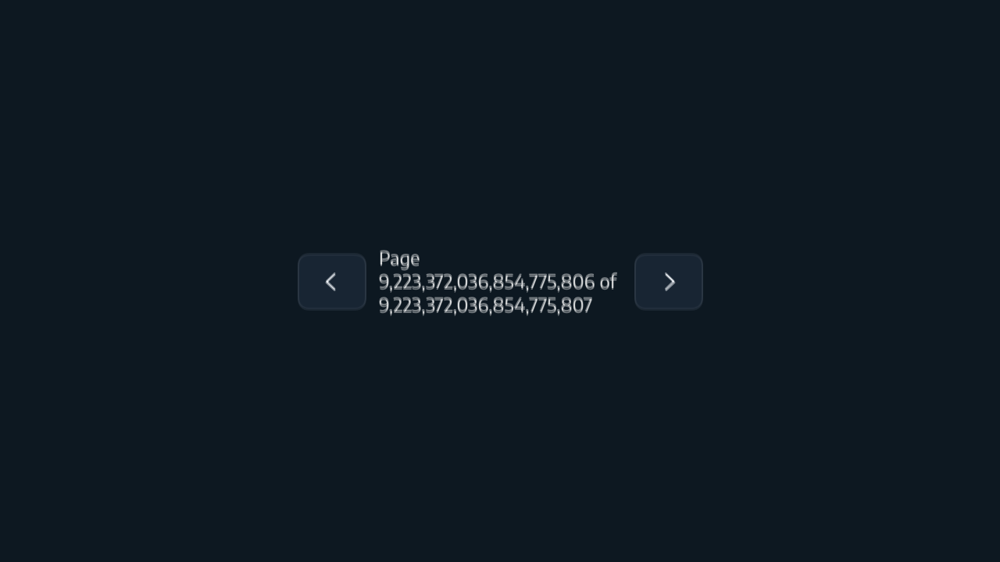
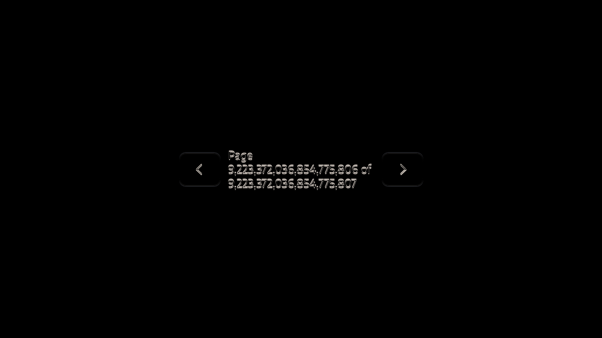
failed: 3227 changed pixels; maximum channel error 205
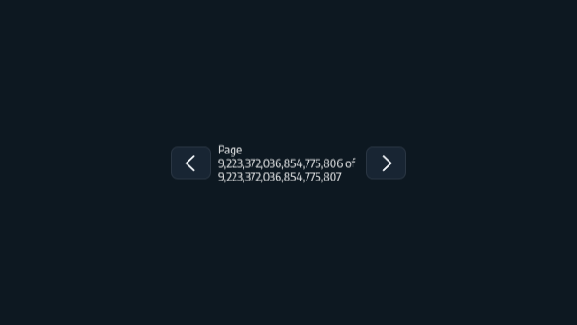
failed: 10209 changed pixels; maximum channel error 216
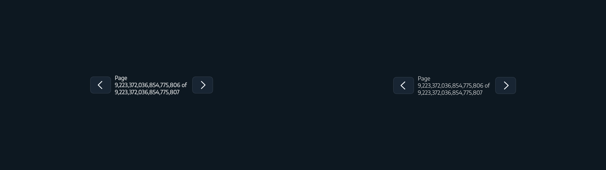
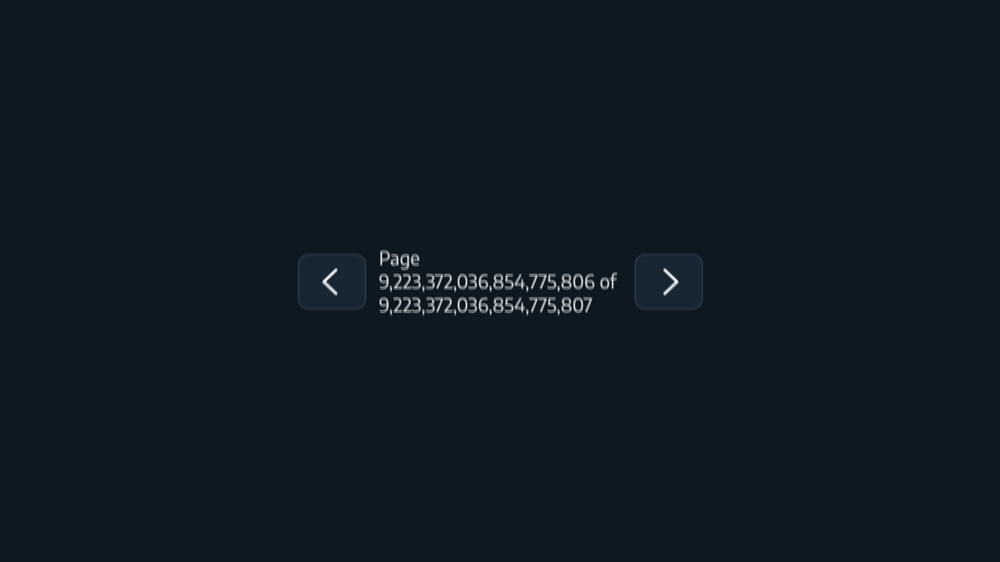
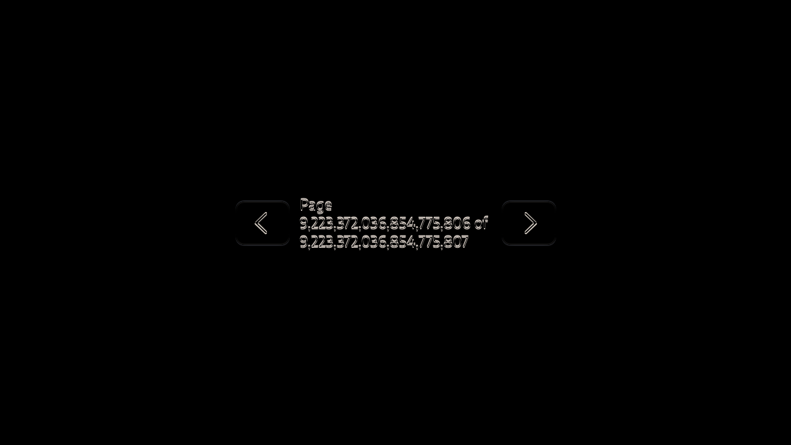
failed: 2969 changed pixels; maximum channel error 216
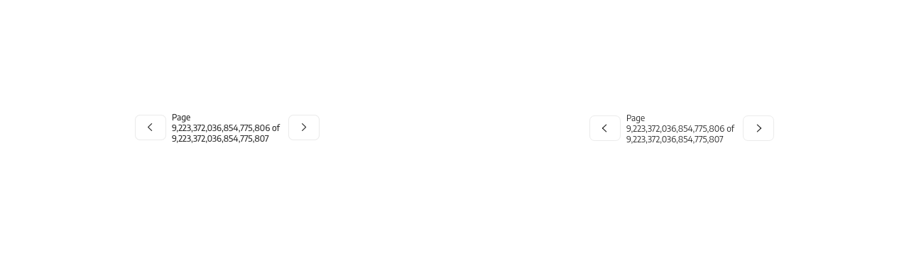
failed: 9568 changed pixels; maximum channel error 216
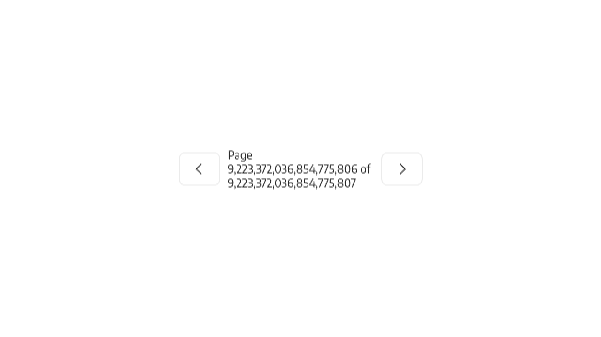
failed: 3020 changed pixels; maximum channel error 216
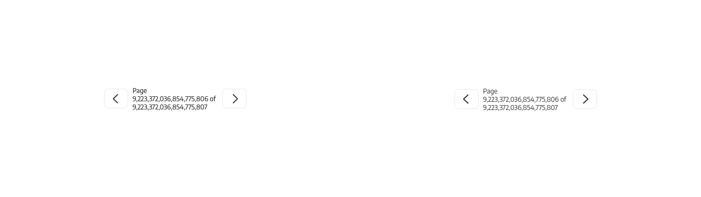
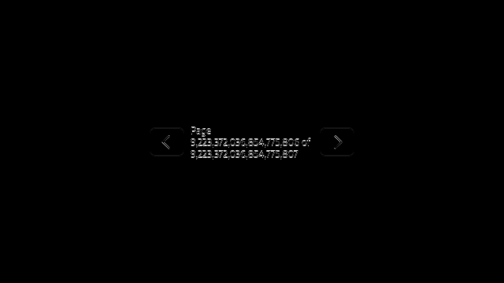
failed: 9777 changed pixels; maximum channel error 216